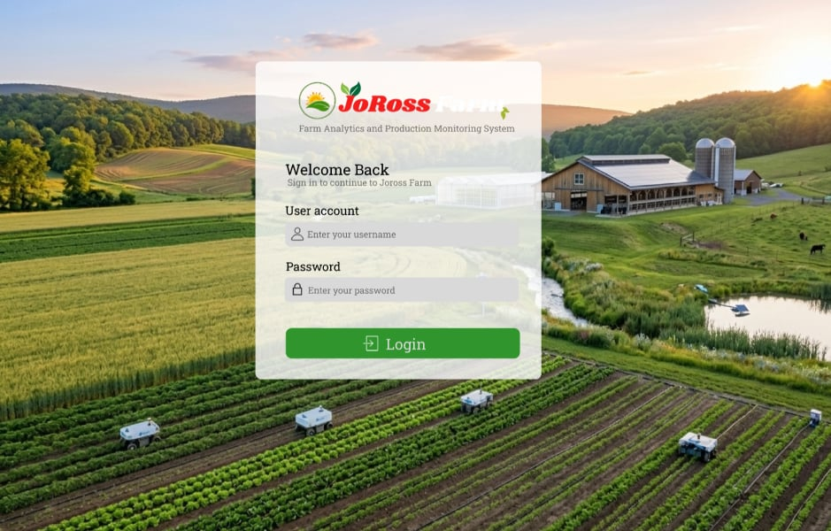

System Development
Planning and building software solutions.
PERSONAL PORTFOLIO
BSIT Student | Aspiring IT Professional
I’m an Information Technology student who enjoys turning ideas into practical digital solutions through development, thoughtful design, and continuous learning.
Open to learning and professional opportunities
01 / ABOUT ME
My name is John Henry A. Bayonito, and I am a fourth-year Bachelor of Science in Information Technology student at STI College Legazpi. I would describe myself as a curious and motivated person who enjoys learning, exploring ideas, and understanding how technology works. I am especially interested in system development, databases, and designing interfaces that are simple and useful. Outside the classroom, I value opportunities to improve my skills, learn from other people, and take on challenges that help me grow. I see every project and learning experience as a chance to become more capable and prepared for my career.
02 / TECHNICAL SKILLS
Planning and building software solutions.
Organizing and working with structured data.
Designing intuitive, user-centered interfaces.
Building and styling responsive web pages.
Developing application logic and desktop apps.
Working with a document-oriented database.
Creating interface layouts and prototypes.
03 / SELECTED PROJECT

CAPSTONE SYSTEM / LOGIN SCREENA system focused on supporting livestock farm operations through analytics and production monitoring. The project brings together application development, database management, and web technologies to present relevant farm information in a more organized and accessible way.
04 / EDUCATION
CURRENT · 4TH YEAR
Bachelor of Science in Information Technology
Undergraduate · College05 / CERTIFICATE
ORACLE ACADEMY
Award of Course Completion for satisfactory completion of all coursework.
06 / CONTACT
HAVE A PROJECT OR OPPORTUNITY?